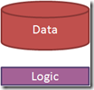
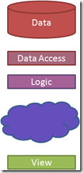

Turn software architecture on its ear
Monday, January 31st, 2011Software architectures have evolved since the first computers were put to use. Early computer operators would hardly recognize the systems we build today. Architecture continues to evolve at a pace where we will not recognize the systems of tomorrow.
 A computer used to be a large, noisy machine enshrined within a windowless room. The only access to it was through punched cards, teletype printouts, and eventually dumb terminals. Computer programs were input/output routines that ran business logic over data.
Then the personal computer revolution hit and a computer became a briefcase-sized box sitting on your desk with a television on top. People could run their own logic on their own data without having to lease space on the mainframe. Rather than building custom programs for every need, people could buy applications. Thus the software industry was born.
 Unfortunately, applications didn’t make it easy to collaborate with other people. The data and the logic were both on your PC. And so people adopted the World Wide Web as a way of sharing data. With the advent of the web, applications again became centralized. The personal computer started to resemble the dumb terminal again, becoming only a host for a web browser.
Then rich web applications brought interactivity and power back to the personal computer. The browser gained the ability to run JavaScript, making the dumb terminal a little bit smarter. This trend continued with Flash, JQuery, and Silverlight.
Smart phones broke the user experience out of the browser and moved it into apps. Apps had some of the benefits of browser-based clients in that they were quicker to develop, and easier to deploy. But they also were like an application in that they were useful offline.
 This is our current state of software architecture. The data still resides in a large noisy machine in a windowless room, but we have installed layers of access in front of it. We can call an API – whether it be REST or Web Services – to invoke the business logic and access that data. We have a service agent on the client side – perhaps AJAX or RIA Services – to invoke that API. It brings back a model – JSON or XML converted into objects – that we can translate through a view model and display on a view.
This is our current state of software architecture. The data still resides in a large noisy machine in a windowless room, but we have installed layers of access in front of it. We can call an API – whether it be REST or Web Services – to invoke the business logic and access that data. We have a service agent on the client side – perhaps AJAX or RIA Services – to invoke that API. It brings back a model – JSON or XML converted into objects – that we can translate through a view model and display on a view.
Writing software today, it seems like we’ve always done it this way. But it was only 50 years ago that we started on this journey. Some of the people who made the earliest advances are still with us now.
Where we are going
Take a look at the work of people like Udi Dahan, Greg Young, and Ayende Rahein to see the next step in this architectural evolution. Look at where NoSQL projects like MongoDB and CouchDB are leading us. This architectural stack is about to be turned on its ear.
One of the big problems that we are about to solve is the synchronous nature of our current APIs. REST and Web Services are based on the idea of request/response. Synchronous protocols have scaling and reliability issues. Udi and Greg are proposing new ways of creating asynchronous services.
Another problem that we are working on is impedance mismatch. The database is relational. The logic is object-oriented. The API is document-oriented. And the view is a scene graph (HTML or XAML). At every layer, we have to map one format onto the next. NoSQL databases skip the relational and object-oriented layers and go straight to documents. Microsoft’s data binding, John Resig’s JQuery, and Steve Sanderson’s Knockout bridge the object/scene graph gap.
What will the architectural diagram look like in 5 years? I have a guess, but I can’t say for sure. The only thing certain is that it will look nothing like it does today.

{kind=link}
{kind=link}
{kind=link}